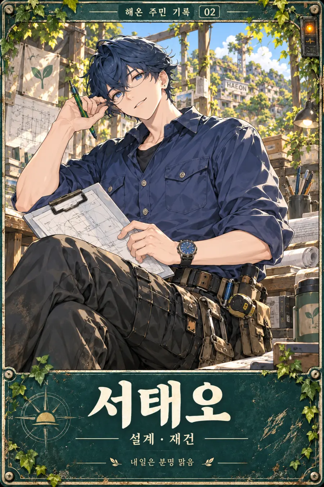
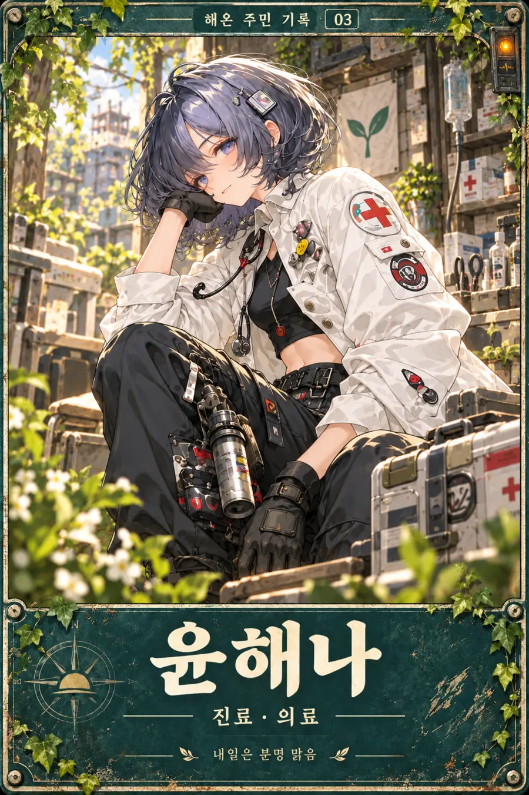
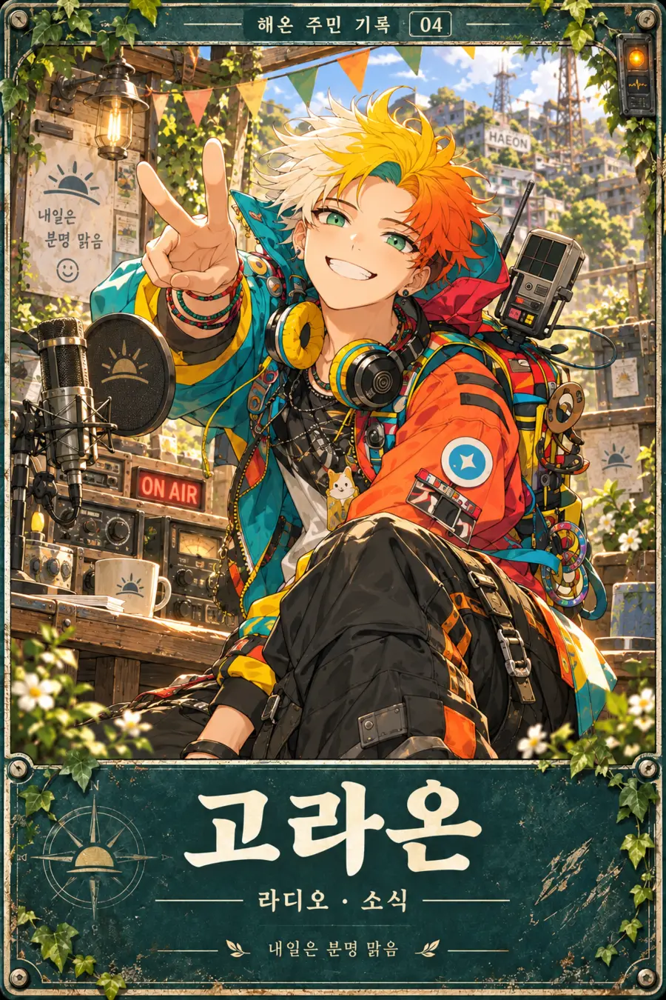
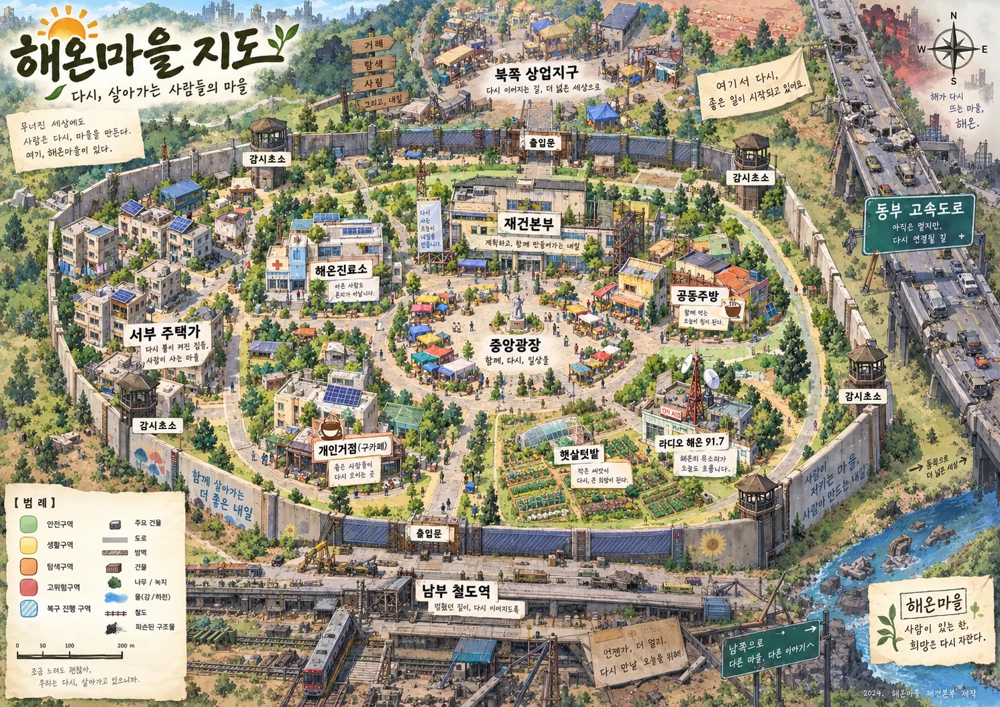
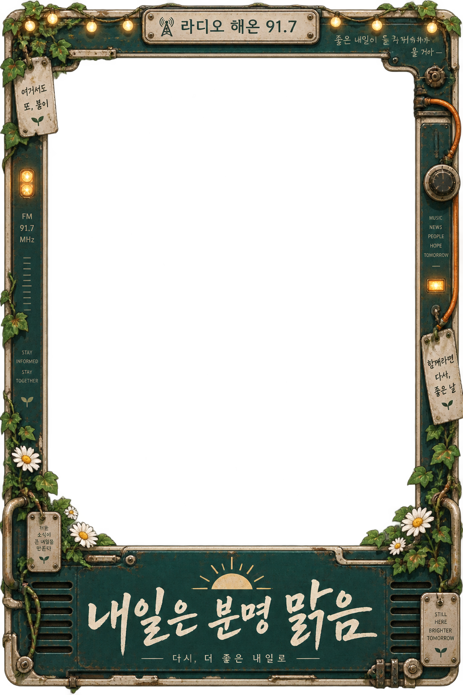

SCAVENGER / INFECTED?
유건하
“내년 얘긴 하지 마. …근데 그 씨앗은 봄에 심자.”
외부탐색 · 호위 · 물자조달
감염 후 841일째. 아직 인간.
HAEON SAFE SETTLEMENT · DAY 1127
통신망은 살아 있고, 라디오는 곧 시작됩니다.
해온마을 정착 단말기에 접속합니다.
> NETWORKSTABLE
> NORTH GATESECURED
> RADIO 91.7READY
START를 누르면 음악과 함께 해온에 입장합니다.
Resident Records
각자 하는 일도, 버티는 방식도 다르다. 그래도 사고가 나면 결국 같은 곳으로 달려온다.
“내년 얘긴 하지 마. …근데 그 씨앗은 봄에 심자.”
외부탐색 · 호위 · 물자조달
감염 후 841일째. 아직 인간.

“일단 다치지 마십시오. 나머지는 제가 정리하겠습니다.”
토목 · 행정 · 5개년 계획
오늘 점심은 또 잊음.

“안 죽었어. 그럼 됐지.”
진료 · 감염관찰 · 응급처치
주민 건강 담당. 본인 건강은 방치.

“오늘 맑음! 감염체 셋! 축제는 예정대로 합니다!”
라디오 · 무전 · 행사 · 사고
마을 방송국이자 인간 확성기.
“먹고 안 죽는 거랑 잘 사는 건 다른 일이잖아.”
공동주방 · 텃밭 · 식량
귀한 설탕을 케이크로 만드는 위험인물.
Re:build Haeon
수도와 방벽 다음은 상점, 학교, 목욕시설, 야간조명. 살아 있는 것에서 잘 사는 것으로 넘어가는 중이다.
“살아남는 데 당장 필요 없는 것부터, 하나씩 되찾는 중입니다.”
Haeon Field Guide
안쪽은 생활구역, 바깥은 탐색구역. 표지판을 믿되, 마지막 판단은 직접 해라.
FIELD MAP · UPDATED DAY 1127
생활구역과 외곽 탐색로를 표시한 최신 지도. 이동 전 경보 상태를 확인할 것.

무엇을 열지는 당신 마음. 비어 있는 진열장은 생각보다 빨리 채워진다.
장터, 축제, 주민회의. 감염체보다 행사 때문에 더 시끄럽다.
구 보건소를 개조한 진료소. 감염 관찰 기록은 이곳에 모인다.
급식실과 운동장이 식탁이 됐다. 저녁 메뉴는 늘 중요한 안건이다.
지도, 배선도, 도로 계획. 서태오가 밥을 잊는 장소이기도 하다.
폐음반가게에서 흘러나오는 음악과 무전. 좋은 소식은 일단 크게 말한다.
오늘도 해온 전역에 송출 중입니다.

HAEON ORIGINAL SOUNDTRACK
첫 방송을 연결하는 중입니다.